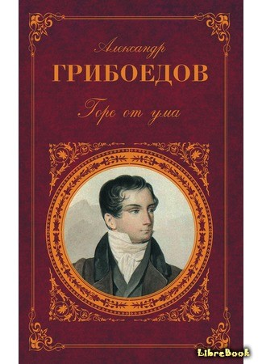

 «Го́ре от ума́» — комедия в стихах Александра Сергеевича Грибоедова. Она сочетает в себе элементы классицизма и новых для начала XIX века романтизма и реализма. Она описывает светское общество времен крепостного права и показывает жизнь 1808—1824 годов. Само «действие происходит… спустя десять лет после войны 1812 года, то есть в 1822»[1]. Комедия «Горе от ума» — сатира на аристократическое московское общество первой половины XIX века — одна из вершин русской драматургии и поэзии; фактически завершила комедию в стихах как жанр. Афористический стиль способствовал тому, что она разошлась на цитаты.
 Магазин нижнего белья "Bodya secret"
Магазин нижнего белья "Bodya secret"